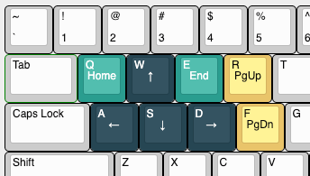

This rule is inspired by "Caps Lock W/A/S/D Arrows" and replaced the extra layer with the form of combination keys. Replace Caps with Fn, then modify W/A/S/D/Q/E/R/F with Fn to ↑/←/↓/→/Home/End/PageUp/PageDown.

| Key | Maps To |
|---|---|
| W | Up |
| A | Left |
| S | Down |
| D | Right |
| Q | Home |
| E | End |
| R | Page Up |
| F | Page Down |